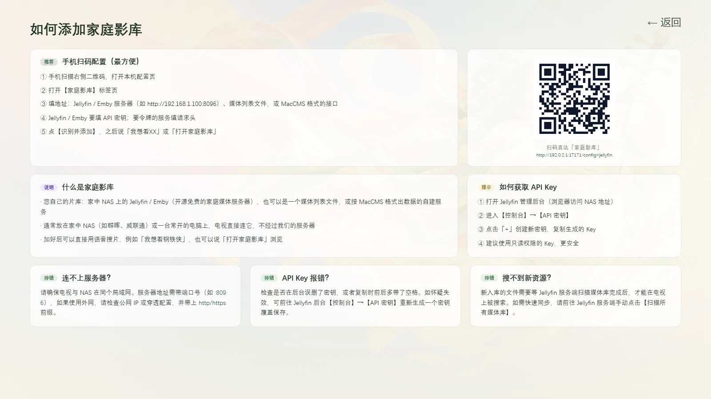
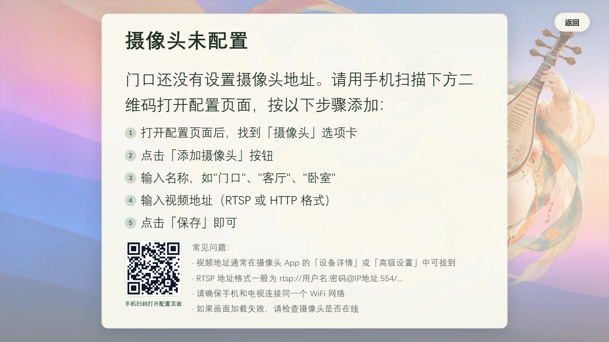
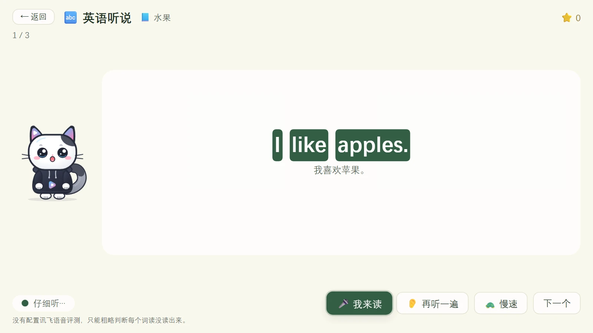
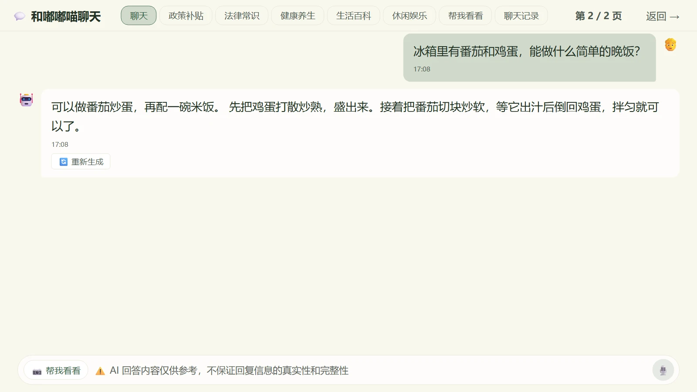

嘟嘟喵陪伴您的一天

第 1 页
电视直播
- 在首页点「看电视」，或按住遥控器确认键，听到提示音后说「看电视」，说完松手。
- 用方向键选频道，按确认键播放。也可以直接说频道名。
- 播放时说「下一个台」，可以按顺序换台。
国内版需要先在手机配置页导入直播源。图为导入后的频道列表。

第 2 页
找电影
- 在首页打开电影推荐，或按住确认键说出您要找的片名。
- 用遥控器选一张海报。要在自己的点播源里找片，先到手机配置页的「源管理」添加来源。
片单和可播放的内容取决于所在地区及已添加的来源。

第 3 页
打开家庭影库
- 在手机配置页打开「家庭影库」。
- 输入家中 Jellyfin、Emby 等媒体服务的地址，选「识别并添加」。
- 回到电视说「打开家庭影库」，也可以直接说片名搜索。
需要密钥的影库，可在对应服务中生成密钥后按提示填写。

第 4 页
设置提醒
以提醒吃药为例。
- 在电视首页按住遥控器确认键，等提示音。
- 说「提醒我晚上八点吃药」，说完松开按键。
- 看到「每天 20:00 都会提醒您」，就设好了。也可以打开首页的「贴士与收藏」查看。
八点是演示时间。您可以说出自己想设定的时间。

第 5 页
在电视上看摄像头
- 在手机配置页打开「摄像头」，填名称和视频地址。
- 点「添加」，再点「保存全部摄像头」。
- 对电视说「打开门口摄像头」，把「门口」换成您填写的名称。
也可以从电视首页点「查看监控」。

第 6 页
放大细小的说明书
- 打开电视首页的「帮我看看」。
- 用手机拍下说明书，扫电视上的二维码上传照片。
- 在电视上选中照片，点「放大查看」进入全屏。
- 按遥控器确认键，在 1×、2×、4× 之间切换。用方向键移动照片，按返回键退出全屏。

第 7 页
辅导作业
- 在电视首页选「帮我看看」。
- 用手机扫码上传题目照片，或用已配置的书桌摄像头拍照。
- 在电视上选中照片。接入能看图的 AI 模型后，可以请它讲解解题思路，再接着问。
手机和电视要连同一个 Wi-Fi。需要 AI 讲解时，按完整手册配置支持看图的模型。

第 8 页
和嘟嘟喵练听说
- 说「练英语」。
- 选一个练习，听电视示范，再按提示开口跟读。
- 想调整练习难度，在手机配置页「帮我看看」设置孩子的年级等信息。
可选练习随版本、年级和语言程度而变。

第 9 页
全家一起玩
- 点首页的「全家一起玩」，在「网页游戏」里选一款。
- 可以用电视遥控器加入，也可以让家人用手机扫电视上的加入码。
- 手机和电视连同一个 Wi-Fi。大家准备好后，在电视上点「开始游戏」。
图中是内置网页游戏「同心弹珠」。

第 10 页
和 AI 聊天
- 先在手机配置页的「推理大模型」中接入本地大模型，或选择云端模型并填写 API Key。
- 在电视首页打开「AI 聊天」，按住遥控器确认键，听到提示音后说出问题，说完松手。
- 试试问「冰箱里有番茄和鸡蛋，能做什么简单的晚饭？」还可以接着问具体做法。

第 11 页
给孩子设观看时长
- 由大人在首页按住确认键说「只能看半小时」。
- 看视频、玩游戏和停留在首页都会累计观看时间。
- 到时电视进入学习页。大人可以按画面提示解除限制。
听说练习和「帮我看看」作业模式不计入观看时长。

第 12 页
手机扫码设置电视
- 在 Android 7.0 或以上的安卓电视或电视盒子上安装 APK，然后打开嘟嘟喵TV。
- 把手机和电视连到同一个 Wi-Fi，用手机扫 App 首页「设置与说明」的二维码。
- 按需在手机上配置来源、天气城市和桌面背景。设置完成后回到电视继续使用。
交给 AI 助手安装时，把完整配置手册、APK 和电视调试地址一起发给它。